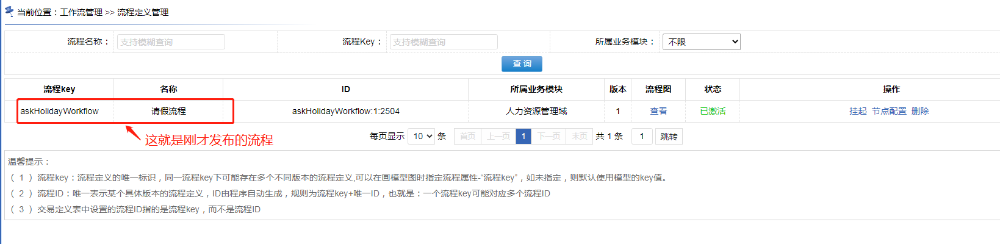
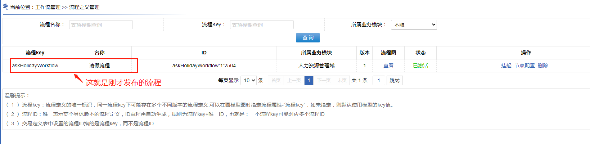
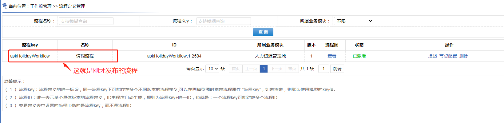
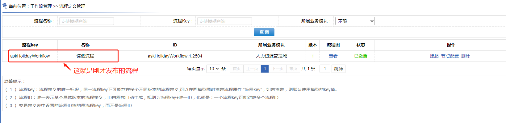
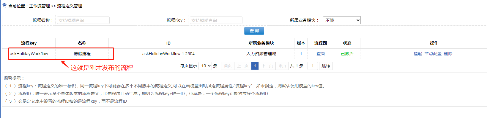

22.2.4、发布流程定义
进入菜单“工作流管理 >> 流程模型管理”，点击具体模型上的“发布”按钮，可以对流程进行发布。
注意：一个流程模型，可以发布多个流程定义，这样可以省去为每个流程都画流程图的操作。“模型”可以理解为一个“流程模具”
~~~~~~~~~~~~~~~~~~~~~~~~~~~~~~~~~~~~~~华丽的分割线~~~~~~~~~~~~~~~~~~~~~~~~~~~~~~~~~~~~~~~~~
发布后，进入菜单“工作流管理 >> 流程定义管理”


 


